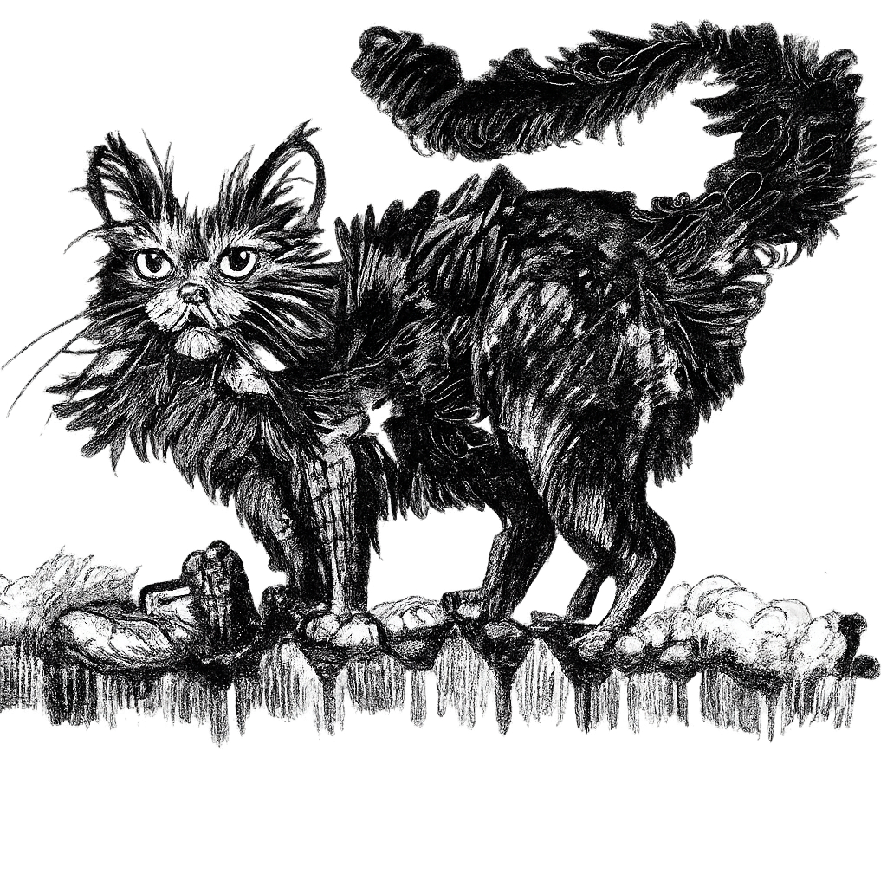
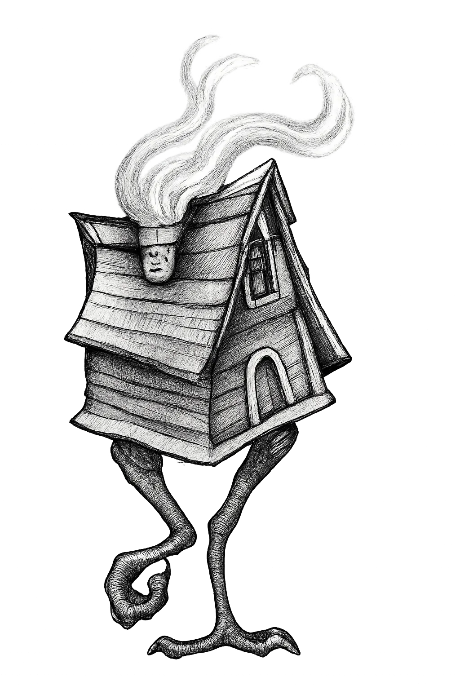
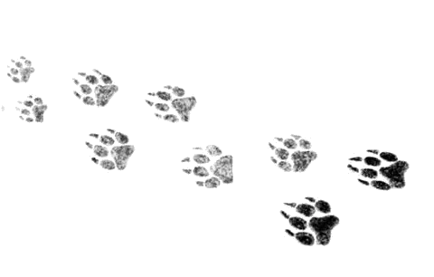

Хотите поностальгировать и помечтать вместе с вашими детьми? Читайте им вслух про новогодние приключения Дениски и его друзей! Эта история не только для детей — она для всех, кто готов вновь ощутить себя ребёнком, верящим в чудеса. Читайте и возвращайтесь в своё собственное детство, когда между волшебством и реальностью были стерты грани и верилось, что в ручье у Площанихи живет русалка. Эта история о дружбе, поддержке и о том, как важно оставаться верным себе.
«Заветная мечта» — российская национальная премия в области детской литературы. Учреждена в 2005 году Детским благотворительным фондом «Заветная мечта». Вручалась с 2006 по 2009 год.
«Лена: Мы ужасно хохотали над Бабкой Ёжкой...»
«Юра: Окунулся в снег, в детство, дочитал уже сам, когда дети уснули.»
«Диана: Здорово, есть что вспомнить по ходу чтения из собственных детских переживаний и рассказать детям, как было у нас.»
Отзыв занимает всего ничего и очень помогает книге находить новых читателей 💛